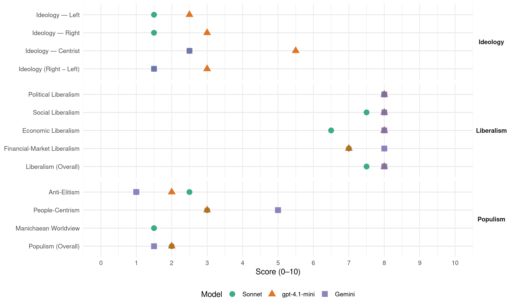

(Ireland, 1987)
manifesto_id 53520_198702
Get full text: This site shows derived annotations and short verbatim quotes only. The full manifesto text is © Manifesto Project / WZB — obtain it via manifesto-project.wzb.eu using the manifesto_id above.
Headline scores
| Dimension | Sonnet | gpt-4.1-mini | Gemini |
|---|---|---|---|
| Populism (Overall) | 2.0 | 2.0 | 1.5 |
| Anti-Elitism | 2.5 | 2.0 | 1.0 |
| People-Centrism | 3.0 | 3.0 | 5.0 |
| Manichaean Worldview | 1.5 | – | – |
| Ideology (Right − Left) | 1.5 | 3.0 | 1.5 |
| Liberalism (Overall) | 7.5 | 8.0 | 8.0 |
| Political Liberalism | 8.0 | 8.0 | 8.0 |
| Social Liberalism | 7.5 | 8.0 | 8.0 |
| Economic Liberalism | 6.5 | 8.0 | 8.0 |
| Financial-Market Liberalism | 7.0 | 7.0 | 8.0 |
Evidence per dimension
Economic Liberalism
Gemini · score 8.0 · verified · chunk 1
“restrictive practices which work to the detriment of the consumer”
Fine Gael believes that in the “free enterprise sector” there are restrictive practices which work to the detriment of the consumer.
gpt-4.1-mini · score 9.0 · verified · chunk 1
“Fine Gael believes that the self destructive circle of high spending, high taxation, high borrowing and high interest rates can be broken only by real and specific cuts in government spending”
Fine Gael believes that the self destructive circle of high spending, high taxation, high borrowing and high interest rates can be broken only by real and specific cuts in government spending. Such spending cuts are popular in theory with some people - but they are rarely popular when spelt out in detail. Yet anything less than specific detailed proposals would be only window-dressing. Unless details are set out before an election, action will be much harder to take afterwards. Fine Gael is the only political party with the courage to say just what needs to be done to reduce expenditure.
gpt-4.1-mini · score 7.0 · verified · chunk 2
“economies by reducing the number of Ministers of State from 15 to 8”
Fine Gael also proposes to achieve economies by reducing the number of Ministers of State from 15 to 8. At the same time, Cabinet Ministers requiring additional political assistance with their work will have allocated to them TDs as Parliamentary Private Secretaries.
Sonnet · score 8.0 · verified · chunk 1
“Encouraging enterprise and sharing wealth”
The radical policy shifts needed to pull us out of this vicious circle and make real jobs include: * Cutting public spending…* Encouraging enterprise and sharing wealth * Freeing rigidities in the labour market.
Sonnet · score 5.0 · verified · chunk 2
“stimulate economic activity in Northern Ireland”
Fine Gael looks forward to the allocation of the International Fund by its Trustees in a manner that will stimulate economic activity in Northern Ireland and in Border areas of our State.
Financial-Market Liberalism
Gemini · score 8.0 · verified · chunk 1
“Futures, Swaps, Options and other new types of financial markets”
Proposals are being actively examined for Futures, Swaps, Options and other new types of financial markets to be located in Dublin.
gpt-4.1-mini · score 7.0 · verified · chunk 1
“Fine Gael will also seek to promote, in conjunction with the British or French authorities, an inter-connector with Britain or France”
Fine Gael fully supports the conclusions of the Jakobsen Report on the ESB. This report gives specific recommendations for the reduction of overheads in the ESB. This is designed to reduce electricity costs to domestic consumers and to industry. Fine Gael in Government will be seeking a comprehensive report from the ESB on the implementation of every aspect of the Jakobsen report by 21st May, 1987. In addition, the Government will establish an independent mechanism for validating the tariff structure of the Electricity Supply Board. This will ensure that a competitive and comparable price is paid by the Electricity Supply Board to private generators of electricity who sell electricity to the ESB grid. A clear and fair formula for the pricing of such electricity is necessary for the development of private electricity generation. Without private electricity generation, the full indigenous potential of electricity generation in Ireland will not be achieved. This is because some electricity generation projects are too small-scale to be undertaken by the ESB itself, or are subsidiaries of another industrial operation undertaken by a private firm. Fine Gael will also seek to promote, in conjunction with the British or French authorities, an inter-connector with Britain or France which would end our isolation with respect to electricity production and reduce the costly reserve capacity made necessary by this isolation.
Sonnet · score 7.0 · verified · chunk 1
“Futures, Swaps, Options and other new types of financial markets”
Proposals are being actively examined for Futures, Swaps, Options and other new types of financial markets to be located in Dublin.
Political Liberalism
Gemini · score 8.0 · verified · chunk 1
“strengthen democracy through a wider diffusion of wealth”
The Government’s campaign to broaden share ownership has therefore a wider political objective - to strengthen democracy through a wider diffusion of wealth ownership, both to workers in their own firms, and to the general public.
Gemini · score 8.0 · verified · chunk 2
“representation in parliament being proportional”
The Irish people are strongly attached to the concept of representation in parliament being proportional. They expect and wish the Dail to reflect
gpt-4.1-mini · score 8.0 · verified · chunk 1
“Fine Gael will initiate a Referendum designed to authorise a modification of the present electoral system”
6.1 THE ELECTORAL SYSTEM There has been widespread and growing concern in recent years at the extent to which pressures deriving from our present multi-seat electoral system diverts TDs away from their legislative role towards an undue concentration on constituency work. It would be a grave mistake to undervalue the importance of such contact with individual constituents; without a significant interaction between constituents and their representatives, TDs would not gain the practical knowledge of defects in the existing administrative system that require remedy by legislative action. The problem lies rather in the excessive concentration on this kind of activity which is forced upon TDs, not merely by the normal competitive process between parties, but also by competition between TDs of the same party. In the past, two attempts at constitutional changes to deal with this problem were initiated by Fianna Fail. Both were extremely crude and simplistic efforts to substitute for our PR, system the British electoral system, which involves placing a single X opposite one name on the ballot paper in single-seat constituencies. The Irish people are strongly attached to the concept of representation in parliament being proportional. They expect and wish the Dail to reflect reasonably accurately the overall political views of the people as a whole, and any revision of the electoral system must be such as to produce that result. At the same time they are also clearly attached to the more sophisticated Irish voting method of placing candidates in order of choice, rather than placing an X after one name. Any reform of the system designed to deal with the problem of multi-seat constituencies must, therefore, take account of these two requirements. Fine Gael will initiate a Referendum designed to authorise a modification of the present electoral system, invoiving the election of much the greater part of the members in the Dail (possibly about two-thirds) by transferable vote (1,2,3,etc.) in single-seat constituencies.
gpt-4.1-mini · score 8.0 · verified · chunk 2
“democracy, courts, media, government, parliament”
The Irish people are strongly attached to the concept of representation in parliament being proportional. They expect and wish the Dail to reflect reasonably accurately the overall political views of the people as a whole, and any revision of the electoral system must be such as to produce that result.
Sonnet · score 8.0 · verified · chunk 1
“sealed off the Planning Appeals Board from political interference”
A major achievement of the present Government has been the Local Government (Planning and Development) Act 1983, which sealed off the Planning Appeals Board from political interference.
Sonnet · score 8.0 · verified · chunk 2
“authorise a modification of the present electoral system”
Fine Gael in Government will initiate a Referendum designed to authorise a modification of the present electoral system, involving the election of much the greater part of the members in the Dail
Liberalism (Overall)
Gemini · score 8.0 · verified · chunk 1
“restrictive practices which work to the detriment of the consumer”
Fine Gael believes that in the “free enterprise sector” there are restrictive practices which work to the detriment of the consumer.
Gemini · score 8.0 · verified · chunk 2
“representation in parliament being proportional”
The Irish people are strongly attached to the concept of representation in parliament being proportional. They expect and wish the Dail to reflect
gpt-4.1-mini · score 8.0 · verified · chunk 1
“Fine Gael believes that the self destructive circle of high spending, high taxation, high borrowing and high interest rates can be broken only by real and specific cuts in government spending”
Fine Gael believes that the self destructive circle of high spending, high taxation, high borrowing and high interest rates can be broken only by real and specific cuts in government spending. Such spending cuts are popular in theory with some people - but they are rarely popular when spelt out in detail. Yet anything less than specific detailed proposals would be only window-dressing. Unless details are set out before an election, action will be much harder to take afterwards. Fine Gael is the only political party with the courage to say just what needs to be done to reduce expenditure.
gpt-4.1-mini · score 8.0 · verified · chunk 2
“opposed to any denial of civil rights on the basis of religious belief”
Fine Gael is opposed to any denial of civil rights on the basis of religious belief or practices. As it has done when in Government in 1973, when we joined the EEC, Fine Gael will continue to exercise Ireland’s independent role in foreign policy matters.
Sonnet · score 8.0 · verified · chunk 1
“broad and tolerant enough to comprehend the whole of our heritage”
whether we want to build a society that will be broad and tolerant enough to comprehend the whole of our heritage.
Sonnet · score 7.0 · verified · chunk 2
“committed to the restoration and preservation of human rights”
Fine Gael is committed to the restoration and preservation of human rights. In conjunction with its partners in the EEC, as well as in its own right, it will pursue this objective.
Anti-Elitism
Gemini · score 1.0 · verified · chunk 1
“politicians, in the short space of an election campaign, frequently make promises”
Ireland has suffered from the fact that politicians, in the short space of an election campaign, frequently make promises to the electorate that they are incapable of keeping.
gpt-4.1-mini · score 2.0 · verified · chunk 1
“Fine Gael rejects the forces of reaction which are so often narrow, inward-looking and intolerant”
Some amongst us, reacting against so much that is unattractive about the modern world, have been tempted to turn in on ourselves, to try to shelter our society from outside forces. But that reaction, while understandable, is a counsel of despair. The world outside will not go away: it knocks insistently on our door. Either we create in our own land a culture, a value system and a society self-confident enough to take its rightful place with others, or we shall be overwhelmed. Fine Gael rejects the forces of reaction which are so often narrow, inward-looking and intolerant. We want to create in Ireland an ethos distinctively Irish and capable of standing on its own feet.
gpt-4.1-mini · score 2.0 · verified · chunk 2
“politicians, in the short space of an election campaign, frequently make promises”
Ireland has suffered from the fact that politicians, in the short space of an election campaign, frequently make promises to the electorate that they are incapable of keeping. The result is severe disillusionment with politics and democracy on the part of the electorate.
Sonnet · score 3.0 · verified · chunk 1
“the self destructive vicious circle created by the Fianna Fail Governments”
Fine Gael believes that the self destructive circle of high spending, high taxation, high borrowing and high interest rates can be broken only by real and specific cuts in government spending. …the self destructive vicious circle created by the Fianna Fail Governments between 1977 and 1982.
Sonnet · score 2.0 · verified · chunk 2
“politicians, in the short space of an election campaign”
Ireland has suffered from the fact that politicians, in the short space of an election campaign, frequently make promises to the electorate that they are incapable of keeping.
Ideology — Centrist
Gemini · score 1.0 · verified · chunk 1
“politicians, in the short space of an election campaign, frequently make promises”
Ireland has suffered from the fact that politicians, in the short space of an election campaign, frequently make promises to the electorate that they are incapable of keeping.
Gemini · score 4.0 · verified · chunk 2
“reflect reasonably accurately the overall political views of the people”
They expect and wish the Dail to reflect reasonably accurately the overall political views of the people as a whole, and any revision of the electoral system
gpt-4.1-mini · score 4.0 · verified · chunk 1
“Fine Gael rejects the forces of reaction which are so often narrow, inward-looking and intolerant”
Some amongst us, reacting against so much that is unattractive about the modern world, have been tempted to turn in on ourselves, to try to shelter our society from outside forces. But that reaction, while understandable, is a counsel of despair. The world outside will not go away: it knocks insistently on our door. Either we create in our own land a culture, a value system and a society self-confident enough to take its rightful place with others, or we shall be overwhelmed. Fine Gael rejects the forces of reaction which are so often narrow, inward-looking and intolerant. We want to create in Ireland an ethos distinctively Irish and capable of standing on its own feet.
gpt-4.1-mini · score 7.0 · verified · chunk 2
“The Irish people are strongly attached to the concept of representation”
The Irish people are strongly attached to the concept of representation in parliament being proportional. They expect and wish the Dail to reflect reasonably accurately the overall political views of the people as a whole, and any revision of the electoral system must be such as to produce that result.
Sonnet · score 3.0 · verified · chunk 1
“Fine Gael takes a pragmatic and progressive view”
Fine Gael takes a pragmatic and progressive view of the question of the expansion of the State sector into new area.
Sonnet · score 2.0 · verified · chunk 2
“Fine Gael believes that there should be a mechanism”
Fine Gael believes that there should be a mechanism to check the cost, and consistency with economic reality, of promises made by parties at elections.
Ideology — Left
gpt-4.1-mini · score 3.0 · verified · chunk 1
“The Government’s campaign to broaden share ownership has therefore a wider political objective - to strengthen democracy through a wider diffusion of wealth ownership”
Already this present Government has undertaken a whole range of measures to encourage enterprise and employment. In successive Finance Acts, the Government has introduced tax concessions to encourage employees to become shareholders in the company in which they work, and the public in general to become shareholders in productive business. Democracy is stronger in a country in which the majority of people own a share in the wealth of the nation. If the wealth is owned by a few people, democracy is vulnerable. The Government’s campaign to broaden share ownership has therefore a wider political objective - to strengthen democracy through a wider diffusion of wealth ownership, both to workers in their own firms, and to the general public.
gpt-4.1-mini · score 2.0 · verified · chunk 2
“Fine Gael has very substantially increased Ireland’s Official Development Assistance Programme”
Despite the difficult budgetary situation during the past four years, Fine Gael has very substantially increased Ireland’s Official Development Assistance Programme. This year despite the £210 million cuts in domestic spending our Assistance Programme will again be increased though it has not proved possible To meet the ‘Building on Reality’ target.
Sonnet · score 2.0 · verified · chunk 1
“improve each year the living standards of the disadvantaged”
We have improved each year the living standards of the disadvantaged, especially of old age pensioners and the long term unemployed.
Sonnet · score 1.0 · verified · chunk 2
“opposition to apartheid in South Africa”
Fine Gael’s policies include opposition to apartheid in South Africa, including support for sanctions
Ideology (Right − Left)
Gemini · score 1.0 · verified · chunk 1
“politicians, in the short space of an election campaign, frequently make promises”
Ireland has suffered from the fact that politicians, in the short space of an election campaign, frequently make promises to the electorate that they are incapable of keeping.
Gemini · score 2.0 · verified · chunk 2
“reflect reasonably accurately the overall political views of the people”
They expect and wish the Dail to reflect reasonably accurately the overall political views of the people as a whole, and any revision of the electoral system
gpt-4.1-mini · score 3.0 · verified · chunk 1
“Fine Gael rejects the forces of reaction which are so often narrow, inward-looking and intolerant”
Some amongst us, reacting against so much that is unattractive about the modern world, have been tempted to turn in on ourselves, to try to shelter our society from outside forces. But that reaction, while understandable, is a counsel of despair. The world outside will not go away: it knocks insistently on our door. Either we create in our own land a culture, a value system and a society self-confident enough to take its rightful place with others, or we shall be overwhelmed. Fine Gael rejects the forces of reaction which are so often narrow, inward-looking and intolerant. We want to create in Ireland an ethos distinctively Irish and capable of standing on its own feet.
gpt-4.1-mini · score 3.0 · verified · chunk 2
“politicians, in the short space of an election campaign, frequently make promises”
Ireland has suffered from the fact that politicians, in the short space of an election campaign, frequently make promises to the electorate that they are incapable of keeping. The result is severe disillusionment with politics and democracy on the part of the electorate.
Sonnet · score 2.0 · verified · chunk 1
“Fine Gael rejects the forces of reaction”
Fine Gael rejects the forces of reaction which are so often narrow, inward-looking and intolerant.
Sonnet · score 1.0 · verified · chunk 2
“Fine Gael in Government will pursue Irish ideals”
Fine Gael in Government will pursue Irish ideals and interests in the foreign policy area.
Ideology — Right
gpt-4.1-mini · score 3.0 · verified · chunk 1
“We want to retain our distinctive Irish identity, while playing our part in the greater world outside”
We are faced also with a more general challenge - that of our relationship with the modern world, and of the kind of society we want to create in Ireland for our children and for their children after them. That society has to be part of the global society but it does not have to be, and few of us want it to be, a mere reflection of a mass world culture. We want to retain our distinctive Irish identity, while playing our part in the greater world outside.
Sonnet · score 2.0 · verified · chunk 1
“retain our distinctive Irish identity”
We want to retain our distinctive Irish identity, while playing our part in the greater world outside.
Sonnet · score 1.0 · verified · chunk 2
“Ireland’s military neutrality”
Fine Gael will continue to uphold Ireland’s military neutrality, provision for which has been included at our insistence in the Single European Act.
Manichaean Worldview
Sonnet · score 2.0 · verified · chunk 1
“the only attempt in the history of the State to politicise the Gardai”
We were faced with the only attempt in the history of the State to politicise the Gardai and to undermine the rights of citizens by illegal telephone tapping.
Sonnet · score 1.0 · verified · chunk 2
“extremely crude and simplistic efforts”
Both were extremely crude and simplistic efforts to substitute for our PR system the British electoral system
People-Centrism
Gemini · score 5.0 · verified · chunk 2
“reflect reasonably accurately the overall political views of the people”
They expect and wish the Dail to reflect reasonably accurately the overall political views of the people as a whole, and any revision of the electoral system
gpt-4.1-mini · score 3.0 · verified · chunk 1
“We want to create in Ireland an ethos distinctively Irish and capable of standing on its own feet”
Fine Gael rejects the forces of reaction which are so often narrow, inward-looking and intolerant. We want to create in Ireland an ethos distinctively Irish and capable of standing on its own feet. We want to see emerging a culture that grows out of the deep and diverse roots that we have inherited, something that finds its inspiration in the values that Christianity, with its roots in the Judaic tradition, upholds.
gpt-4.1-mini · score 3.0 · verified · chunk 2
“The Irish people are strongly attached to the concept of representation”
The Irish people are strongly attached to the concept of representation in parliament being proportional. They expect and wish the Dail to reflect reasonably accurately the overall political views of the people as a whole, and any revision of the electoral system must be such as to produce that result.
Sonnet · score 3.0 · verified · chunk 1
“the Irish people asked us to do”
With the backing of the people, who wanted to see the restoration of normal Government in the State…Fine Gael in Government since December 1982 has done what the Irish people asked us to do.
Sonnet · score 3.0 · verified · chunk 2
“The Irish people are strongly attached”
The Irish people are strongly attached to the concept of representation in parliament being proportional.
Populism (Overall)
Gemini · score 1.0 · verified · chunk 1
“politicians, in the short space of an election campaign, frequently make promises”
Ireland has suffered from the fact that politicians, in the short space of an election campaign, frequently make promises to the electorate that they are incapable of keeping.
Gemini · score 2.0 · verified · chunk 2
“reflect reasonably accurately the overall political views of the people”
They expect and wish the Dail to reflect reasonably accurately the overall political views of the people as a whole, and any revision of the electoral system
gpt-4.1-mini · score 2.0 · verified · chunk 1
“Fine Gael rejects the forces of reaction which are so often narrow, inward-looking and intolerant”
Some amongst us, reacting against so much that is unattractive about the modern world, have been tempted to turn in on ourselves, to try to shelter our society from outside forces. But that reaction, while understandable, is a counsel of despair. The world outside will not go away: it knocks insistently on our door. Either we create in our own land a culture, a value system and a society self-confident enough to take its rightful place with others, or we shall be overwhelmed. Fine Gael rejects the forces of reaction which are so often narrow, inward-looking and intolerant. We want to create in Ireland an ethos distinctively Irish and capable of standing on its own feet.
gpt-4.1-mini · score 2.0 · verified · chunk 2
“politicians, in the short space of an election campaign, frequently make promises”
Ireland has suffered from the fact that politicians, in the short space of an election campaign, frequently make promises to the electorate that they are incapable of keeping. The result is severe disillusionment with politics and democracy on the part of the electorate.
Sonnet · score 2.0 · verified · chunk 1
“Fine Gael is the only political party with the courage”
Fine Gael is the only political party with the courage to say just what needs to be done to reduce expenditure.
Sonnet · score 2.0 · verified · chunk 2
“politicians…frequently make promises…incapable of keeping”
Ireland has suffered from the fact that politicians, in the short space of an election campaign, frequently make promises to the electorate that they are incapable of keeping.
Social Liberalism